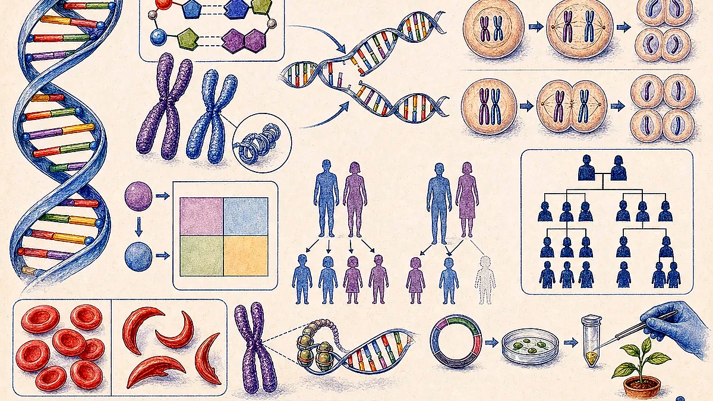
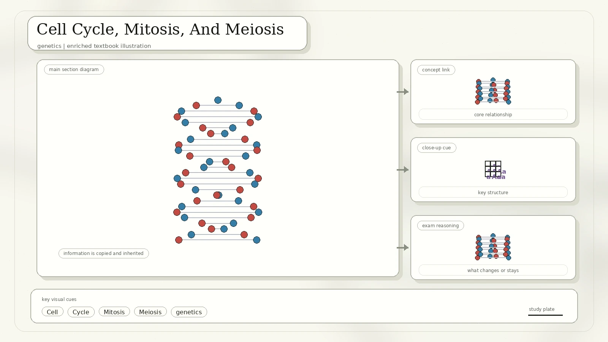
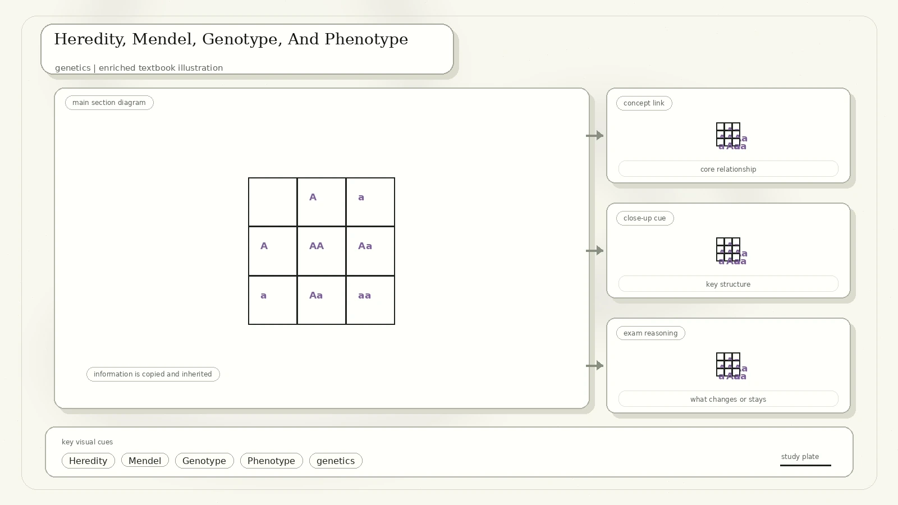
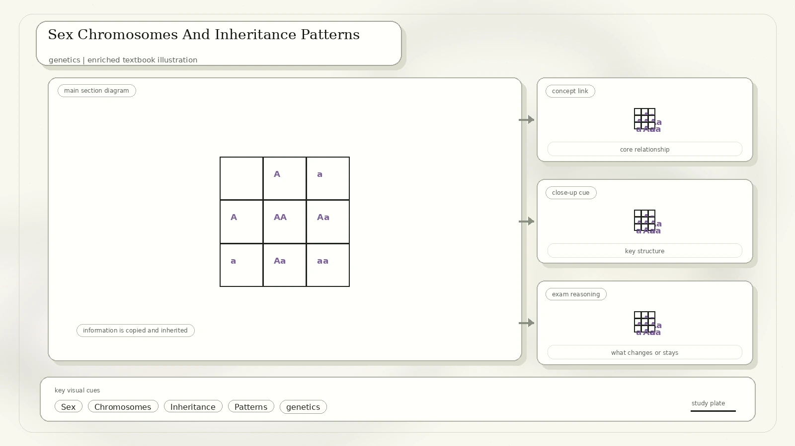
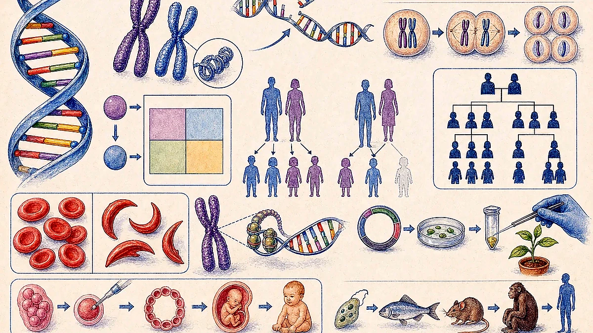

DNA And The Hereditary Material
DNA is a chemical substance found in the nucleus of cells in living organisms. It is a very large molecule made from a long chain of repeating subunits called nucleotides. Each nucleotide contains a sugar, a phosphate group, and one nitrogen-containing base.

The sugar and phosphate parts form the side rails of the DNA ladder.
Adenine pairs with thymine, while cytosine pairs with guanine.
DNA usually consists of two nucleotide strands twisted into a double helix.
Scans 0032 and 0033 repeat early DNA and genetic-code pages that also appear in the complete 0034 scan.
DNA Replication, Central Dogma, And Genetic Code
Before a cell divides, the DNA strands unwind and separate. Each strand acts as a template for a new partner strand. The result is two identical DNA molecules, so each daughter cell can receive the same genetic information.

| Idea | What It Means | Useful SPSO Detail |
|---|---|---|
| Replication | DNA copies itself before division. | Each original strand guides a new complementary strand. |
| Central dogma | DNA is transcribed into RNA, and RNA is translated into protein. | Protein synthesis happens at ribosomes with the help of transfer RNA. |
| Codon | A group of three bases that codes for an amino acid or a stop signal. | The start codon is AUG, which codes for methionine. |
| Protein | A chain of amino acids folded into a useful shape. | The order of amino acids determines the protein's structure and function. |
Chromosomes And Chromatin
Chromosomes are packages of DNA and proteins. DNA wraps around histone proteins to form nucleosomes, and nucleosomes pack into chromatin. During cell division, chromatin condenses into visible chromosomes.

Different species have different numbers of chromosome pairs, such as fruit fly 4 pairs, chicken 18 pairs, and human 23 pairs.
Genes are carried on chromosomes and occur at specific positions called loci.
One chromosome in a homologous pair comes from each parent.
Cell Cycle, Mitosis, And Meiosis
The cell cycle includes growth, DNA synthesis, preparation, mitosis, and cytokinesis. In G1 the cell grows and makes organelles. In S phase DNA is replicated. In G2 the cell prepares for division. In M phase the nucleus and then the cytoplasm divide.

| Process | Purpose | Outcome |
|---|---|---|
| Mitosis | Growth, repair, replacement, and asexual reproduction in some organisms. | Two genetically identical daughter cells with the same chromosome number as the parent cell. |
| Meiosis | Formation of gametes for sexual reproduction. | Four genetically varied cells with half the chromosome number. |
| Cytokinesis | Division of the cytoplasm after nuclear division. | Separate cells are physically produced. |
Mitosis phases: prophase, prometaphase, metaphase, anaphase, telophase, and cytokinesis. The scan uses microscope images to connect the phase names to real cell appearances.
Heredity, Mendel, Genotype, And Phenotype
Genes control characteristics and come in pairs, one allele from each parent. Alleles occupy the same position on corresponding chromosomes, but they do not always control the trait in the same way. Gregor Mendel's pea-plant work showed how discrete traits could be inherited in predictable patterns.

| Term | Meaning | Example |
|---|---|---|
| Phenotype | Visible or physiological characteristic. | Tall plant, purple flower, blood group A. |
| Genotype | Allele combination of an organism. | TT, Tt, tt, IAIB, or ii. |
| Homozygous | Two identical alleles for a gene. | TT or tt. |
| Heterozygous | Two different alleles for a gene. | Tt. |
| Dominant allele | Expressed when present in one copy. | Polydactyly can be inherited as a dominant trait. |
| Recessive allele | Usually expressed only when two copies are present. | Cystic fibrosis and many albinism forms are recessive. |
If two unaffected parents have an affected child for a recessive disease, both parents are likely carriers.
The human ABO system has three alleles: IA, IB, and i. IA and IB are codominant; i is recessive.
Sex Chromosomes And Inheritance Patterns
Sex chromosomes help determine biological sex in humans. Females usually have two X chromosomes, while males usually have one X and one Y chromosome. At meiosis, gametes receive only one sex chromosome.

Red-green colour blindness is often X-linked recessive, so it is more common in males.
Examples in the scan include sickle-cell disease, fragile X syndrome, Huntington's disease, and some forms of albinism.
Down syndrome is associated with trisomy 21. Sex chromosome patterns include XXY and XO conditions.
Many human traits and diseases, including some cancers, involve multiple genes plus environmental effects.
Genetic Diseases, Cancer, And Mitochondrial Inheritance
The scan lists several diseases and connects them to mutations, inheritance, or acquired genetic change. Cancer is described as abnormal cell growth with the potential to invade or spread. It usually results from accumulated genetic mutations that disrupt cell-cycle control.

| Condition | Main Point | Study Hook |
|---|---|---|
| Fragile X syndrome | Inherited form of intellectual disability caused by a mutation on the X chromosome. | X-linked conditions can affect males more strongly because males have only one X chromosome. |
| Huntington's disease | A fatal genetic disorder causing progressive breakdown of nerve cells in the brain. | Dominant inheritance means one mutant allele can cause disease. |
| Haemochromatosis | The body absorbs too much iron and has difficulty removing it. | Iron balance matters because too much iron can damage organs. |
| Cystic fibrosis | Mutations in CFTR affect mucus and can cause lung infections and breathing difficulty. | Often inherited as a recessive condition. |
| Alzheimer's disease | Harmful protein deposits, plaques, tangles, neuron loss, and memory decline are described. | The scan names ApoE as a gene related to Alzheimer's risk. |
| Mitochondrial disease | Mitochondria have their own DNA, inherited mainly through the egg cell. | Mitochondrial DNA is usually inherited from the mother. |
Genetic Engineering, GMO, Selective Breeding, And Biofuel
Genetic engineering transfers genes from one organism to another. A gene may be cut from one organism and inserted into another organism of the same or a different species. If the transferred gene is expressed, the recipient organism can show a new trait.

| Topic | Converted From The Scan | Extra Explanation |
|---|---|---|
| GMO | An organism whose DNA has been altered through genetic engineering. | Examples include bacteria producing human insulin or crop plants receiving pest-resistance genes. |
| Genetic engineering vs selective breeding | Engineering can move carefully selected genes, including between unrelated species; breeding mixes many genes through reproduction. | Engineering can be faster and more targeted, but raises biodiversity, health, patent, and farming concerns. |
| Potential benefits | Improved nutrition, longer shelf life, drought resistance, pest resistance, higher yield, and lower chemical use. | Benefits depend on testing, regulation, and the environment where the crop is used. |
| Possible risks | New allergens, reduced local biodiversity, gene flow, and farmer dependence on patented seeds. | Risk assessment asks what trait was added, where it spreads, and who is affected. |
| Biofuel | Fuel produced from biomass through contemporary biological processes. | Examples include ethanol from corn or sugarcane, biodiesel from vegetable oils, and biogas from organic waste. |
Review Questions
Explain how base pairing allows DNA to be copied accurately.
Compare mitosis and meiosis in purpose, products, and chromosome number.
Use a Punnett square to predict the chance of a recessive trait in offspring.
Describe one benefit and one risk of genetically engineered crops.
Source converted from IMG_20260427_0032.pdf, IMG_20260427_0033.pdf, and IMG_20260427_0034.pdf. The first two scans were duplicate or excerpt pages from the complete genetics note, so all unique material was consolidated here.